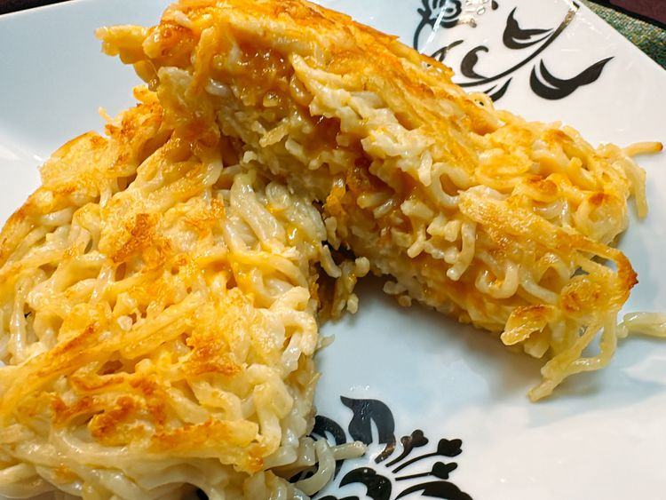

Ramen Grilled Cheese

Quick, deilicious, and easy to make
Ingrediants
- 1 (3 ounce) package instant ramen noodles
- 1 large egg
- 2 tablespoons freshly grated Parmesan cheese
- 2 slices sharp Cheddar cheese
- 1 tablespoon butter
Steps
-
Bring 2½ cups water to a boil in a small saucepan.
Add noodles and cook for 2 minutes. Add flavor packet,
stir, and continue to cook for another 30 seconds,
or prepare ramen according to package directions.
Drain off liquid; allow noodles to cool slightly.
-
Whip egg in a mixing bowl until yellow and frothy.
Stir in Parmesan cheese. Stir in cooked noodles until
completely coated.
-
Line a sealable sandwich container with plastic wrap,
and press half of ramen noodles into the lined container.
Place another layer of plastic wrap into the container.
Press remaining noodles evenly into the container.
Cover and refrigerate until firm, at least 15 hours.
-
Place a skillet over medium-high heat and add a layer
of parchment paper. Add the butter. Remove one piece of
ramen “bread” from the container and place into the
skillet.
-
Top ramen with 2 slices cheese. Place remaining ramen
in skillet; allow to heat through and become golden.
Carefully flip onto the layer that has cheese.
The ramen sandwich is ready when both sides are golden.
Return Home